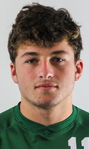

Hi there, my name is Walker White and I am a sophomore at Babson College. I was born in the United Kingdom but was raised in Miami Florida. I have two brothers, both younger than me and one older sister. I graduated from Ransom Everglades High School in 2021 and then moved on to Babson where I am currently an undergraduate. I am also on the Men’s Soccer team where I am the starting goalkeeper. After Babson, I am still unsure of what I want to do with my life.
